The Key to Going Linear: Analysis-Driven Transformer Linearization
[toc]
这篇论文来自 Qualcomm AI Research，题目是 The Key to Going Linear: Analysis-Driven Transformer Linearization，论文入口为 arXiv:2607.07706。作者 Anna Kuzina、Paul N. Whatmough 和 Babak Ehteshami Bejnordi 讨论的是一个很具体但很关键的问题：如果已经有一个训练好的 LLaMA 或 Qwen Transformer，能不能在不重新预训练、不大规模改 backbone 的前提下，把二次复杂度的 causal self-attention 换成线性时间机制，并且解释为什么某些线性机制更不容易掉点。事实包中给出的代码状态是：arXiv 摘要页和 PDF 首页未核验到独立公开代码链接。
因果自注意力的二次复杂度和持续增长的 KV cache 严重限制长上下文推理；已有 post hoc 线性化方法常把 LoRA、滑窗、混合路由、蒸馏等干预混在一起，使人很难判断到底是哪一种线性状态更新真正保住了预训练模型质量。
这份笔记把论文读成三条主线。第一，作者不是直接提出一个大而全的新架构，而是先把问题压到严格的 frozen-backbone 设定：原模型的 Q/K/V 投影和归一化参数不动，只训练替换注意力时新增的少量参数。第二，论文用一阶近似说明 softmax attention 的中心行为其实包含 key-dependent 的 rank-1 正交投影；这正好对应 Gated DeltaNet 这类 delta-style update，而不是只靠对角门控衰减的 GLA。第三，理论只解释了主方向，工程上仍要用 SWA、sink tokens、short convolution 和有限 cache routing 去补前缀 token、局部上下文和投影适配的剩余误差。
1. 背景和问题
长上下文推理里，标准 causal self-attention 的代价来自两件事：每个新 token 要和越来越长的历史 token 交互，计算复杂度随序列长度呈二次增长；同时 KV cache 随上下文增长，推理显存和带宽压力也随之上升。已有许多后训练线性化工作会把原始 full-attention 模型改成线性时间模型，但它们经常同时使用多种补偿手段，例如 sliding-window attention、LoRA、稀疏 cache、蒸馏或混合层路由。这样做能提高最终分数，却让一个基础问题变得模糊：性能到底来自线性状态更新本身，还是来自额外补丁。
论文的切入点因此很克制：先只研究“替换注意力块”这件事本身。作者把所有预训练 backbone 参数冻结，把 softmax attention block 替换成不同线性机制，并只训练替换机制引入的参数。这个设置比很多实际线性化 recipe 更严格，因为它暂时不允许原模型的 Q/K/V 投影适应新机制，也不引入蒸馏和滑窗。严格设置下的结果不一定是最终最强模型，但它能让不同 linear update 的近似能力被单独观察。
这篇论文还把“为什么 GDN 比 GLA 更适合 post hoc 线性化”从经验观察推到几何解释。GLA 的状态更新主要是对历史 state 做输入相关但 key-independent 的对角衰减；GDN 则加入了由当前 key 构造的 rank-1 delta update。作者的核心判断是：softmax attention 在一阶近似下并不是普通的历史累加，而是带有“把与历史 key 方向重合的分量压掉”的投影行为。只要这个投影依赖 key 的方向，GDN 就天然比纯门控累计更接近 softmax。
这也解释了为什么论文很重视前缀 token。softmax 的一阶展开中有一个均匀项，形式上随时间步为 1/t。序列刚开始时，这个项并不小，而标准 GLA/GDN 的递推实现通常没有显式建模这个常数偏置。再加上 decoder-only 模型常把大量注意力放在开头几个 token 上，线性机制在早期位置更容易出现近似误差。后面引入 sink tokens，不是随意加一个 cache trick，而是对理论缺口的一种工程补偿。
从研究问题的组织方式看，这篇工作也在纠正常见的评测歧义。许多线性化论文会给出一个最终系统分数，但如果系统同时改变 attention block、加入滑窗、训练 LoRA、做蒸馏、改 cache policy，那么分数上升并不能回答“核心线性状态更新是否足够像原 softmax”。本文先把变量拆开：先只看纯替换机制，再逐步放回 SWA、sink token 和 projection adaptation。这样的流程让读者能区分三类能力：线性机制自身的几何近似能力、少量精确 attention 路径对局部和前缀的补偿能力、以及 Q/K/V 投影适配对任务表现的恢复能力。这个拆分对工程落地也重要，因为部署时可用预算往往不是“全都加”，而是在显存、延迟、cache 大小和质量之间选择最值得保留的模块。
另一个背景点是，linear attention 在长上下文场景里经常被期待为 full attention 的直接替代品，但实际模型质量掉点通常发生在很具体的位置：前缀 token、局部语义延续、知识型评测、以及多项长程检索任务。论文没有回避这些差异，而是用 MSE 诊断、common reasoning、MMLU、Lambada、S-NIAH 和 RULER 分别观察。这样读结论时就不会把“平均分接近”误读成“所有能力等价”。本文最终更像是在说明一条可解释的 post hoc linearization 路线：GDN 给出更合适的线性状态更新核心，SWA 和 sink tokens 补局部与前缀，short convolution 补投影适配，但复杂检索仍需要更聪明的 cache routing。
2. 方法
2.1 冻结 backbone 下的替换块
论文先定义了一个统一的替换实验：给定预训练 Transformer 的 causal attention block，目标是把它替换为复杂度随 token 数线性增长的机制，同时尽量保持下游任务表现。关键约束是原始模型的 Wq、Wk、Wv 和 RMSNorm 等参数都保持冻结，只有替换机制新增的参数参与训练。这样，实验比较的是“线性机制是否能接住原 softmax attention 产生的表示”，而不是比较全模型再训练能力。这个冻结设置是全文的控制变量：它把“状态更新结构”从蒸馏、LoRA 和全模型再训练里剥离出来。
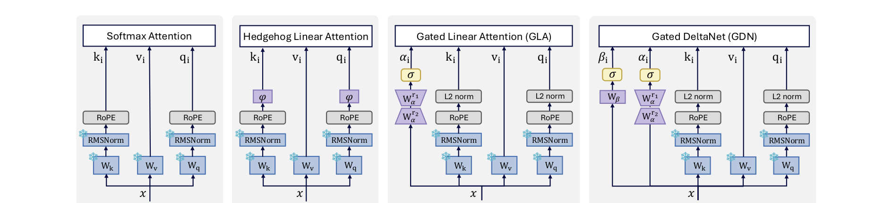
Figure 1 把这个设定画得很清楚。左侧是标准 softmax attention，后面三种分别是 Hedgehog kernelized linear attention、GLA 和 GDN。蓝色标记代表 frozen pretrained parameters，也就是说底部的 Wq、Wk、Wv 和 RMSNorm 没有重新学习。Hedgehog 主要通过 learned feature map 近似 softmax kernel；GLA 在 recurrent state 上加入输入相关的对角门控；GDN 则多了一个由 key 构造的 rank-1 delta 更新。这个图重要的地方不只是列出四种 block，而是把实验变量收窄：如果 GDN 之后表现更好，不能简单归因于“它改了更多 backbone 参数”，因为 backbone 被固定住了。图里 GDN 的 β 和 rank-1 路径也提示了后文理论的主角：问题不是有没有递推状态，而是 state update 是否携带 key-dependent 的几何修正。在论文的符号里，标准 softmax attention 可写成：
符号解释：t 是当前生成位置，i 和 j 是历史 token 下标，q_t 是当前 query，k_i 是历史 key，v_i 是历史 value，d 是 head dimension。这个式子说明 full attention 的每个输出都依赖当前 query 与所有历史 key 的归一化相似度。kernelized linear attention 试图用特征映射把指数 kernel 因式分解：
这里 S_t 是累积的 key-value state，Z_t 是归一化分母的累积项，\phi(q) 和 \phi(k) 是把 query/key 映射到线性特征空间的函数。这个路线保留了显式归一化分母，直觉上更像在拟合 softmax kernel；但是论文的结果显示，在严格 frozen-backbone 条件下，Hedgehog 这种 feature-map 方法并没有很好地接住原模型。
2.2 从 softmax 一阶近似到投影
作者接着把 softmax 权重看成对值向量的加权系数。令 x_i=q_t^\top k_i，softmax 权重 p_i(x) 在零点附近做一阶 Taylor 展开。这个展开不是为了精确替代 softmax，而是为了看出 full attention 权重里除相似度外还隐含了怎样的中心化结构，可以得到：
这里 p_i 是第 i 个历史 token 的 attention weight，\bar{x} 是所有 logits 的平均值，t 仍是历史长度。这个式子把权重拆成均匀项和相对平均 logit 的偏差项，也把后续“前缀位置更难近似”的原因提前暴露出来；代回 scaled dot product 后，就是：
这里的直觉是：softmax 不只是看 q 和单个 k_i 的相似度，它还会隐含地把每个 key 与历史 key 的平均方向做比较。k_i-\bar{k} 是一个中心化项，表示“这个 key 相对历史平均方向的差异”。如果线性机制不能表达这种中心化或投影效果，就会在 frozen-backbone 替换时损失原 softmax 的一部分几何结构。论文进一步把中心化近似为对平均 key 方向的正交投影。设：
符号解释：\bar{k} 是历史 keys 的平均方向，\Pi_{\bar{k}} 是投向这个平均方向的 rank-1 projection matrix。这个矩阵会保留平均方向上的分量并让 I-\Pi_{\bar{k}} 去除该方向；在 key 归一化且方向比较集中时，有：
这一步的意义是把“减去均值”换成“去掉沿平均 key 方向的分量”。如果历史 keys 越集中，这种近似越好；如果前缀处 keys 还没有形成稳定方向，残差就会更大。这正好对应后面实验里的 key concentration 和 projection residual。
2.3 为什么 GDN 比 GLA 更像 softmax
GLA 的递推状态可以写成下面的形式。这里作者关心的不是它能否高效递推，而是它的遗忘矩阵主要是对角衰减，因此只能逐维控制历史 state 的保留比例；这种结构对硬件友好，但表达不了由某个历史 key 方向决定的完整矩阵投影，所以它更像可学习遗忘率，而不是 softmax 几何校正：
符号解释：S_t 是递推状态，G_t 是 gate 产生的对角衰减矩阵，k_t^\top v_t 是当前 token 写入 state 的外积贡献。展开以后，历史 token 的影响主要由一串对角衰减控制。它能表达 recency 和维度级别遗忘，但缺少“沿某个 key 方向做 rank-1 投影”的完整矩阵结构。
GDN 的状态更新则多了一个和当前 key 外积相关的修正项。它仍然保持线性递推形态，但遗忘不再只是维度级别的 gate，而是可以沿 key 方向做 rank-1 修正；这正是它和 softmax 一阶投影近似发生联系的入口：
关键是 I-\beta_t k_tk_t^\top 这个项。它会保留与 k_t 正交的分量，同时压低与 k_t 对齐的分量；这比对角 gate 更接近“从历史平均方向中剔除相似部分”的几何动作。多个历史 key 的 rank-1 投影连乘后，可以近似成：
这里 \beta_t 是输入相关的 per-head scalar，c 是由多个 \beta_j 和 key 集中程度共同决定的非负系数。当 keys 越集中，这个连乘越像单个平均方向投影；再代回 softmax 权重近似，就得到：
这就是论文的理论核心：GDN 的 delta rule 不是随便多了一个 gate，而是恰好有表达 softmax 一阶中心化投影的结构。它缺的主要是常数偏置 1/t，尤其在序列前几个 token 时会更明显。因此，单靠 GDN 仍不能完全恢复 full attention，但它比 GLA 更像原 softmax 的几何行为。
2.4 结构补偿：SWA、sink tokens 与 short convolution
理论告诉我们 GDN 的方向更对，但也暴露了两个剩余问题。第一，局部上下文的精确 softmax 仍然很难完全由一个线性 recurrent state 表示。第二，前缀 token 的 1/t 偏置和 attention sink 行为在标准 GDN/GLA 实现里没有被显式建模。论文因此逐步加回结构补偿。作者的 SWA 组合不是简单把 linear path 和 sliding-window path 各乘 0.5，而是让窗口内 token 走精确 SWA，窗口外 token 走线性状态：
符号解释：w 是滑窗长度，S_{t-w} 表示窗口外历史压缩进线性 state 后的部分，y_t^{\mathrm{swa}} 是窗口内用精确 softmax attention 算出的局部输出。进一步，固定总 cache budget 为 64 时，作者把其中 8 个位置分给 sink tokens，另外 56 个位置留给滑窗：
这里 I 是精确保留 attention 的 token 集合，前 s 个 token 是 sink tokens，后半部分是最近窗口。这个设计和前文分析形成闭环：如果早期 token 确实是线性近似最困难的区域，那么与其把 64 个 token 全部放给最近窗口，不如把一小部分预算固定给前缀。最后，论文还测试了 Q/K/V projection adaptation。LoRA 和 short convolution 都允许原始投影周围出现少量可训练适配，但 short convolution 在该实验设置下更稳定。作者的解释也比较谨慎：LoRA 的学习率被调低以避免不稳定，所以不能绝对断言 LoRA 不如 short convolution；但从当前表格看，short convolution 对 LAMBADA 这种更依赖上下文的任务帮助明显，而 MMLU 这种更偏知识记忆的任务仍有缺口。
3. 实验结果
论文实验从最严格的 pure replacement 开始。训练数据使用 DCLM-Edu，序列长度 4096，训练 2500 步，大约 10M tokens。GLA 和 GDN 训练约 1 小时单 H100，Hedgehog 因为缺少 Triton 实现约 8 小时。这个训练预算很小，目的不是把模型完全重新训练，而是看替换机制是否能在有限适配下接近原 attention block。
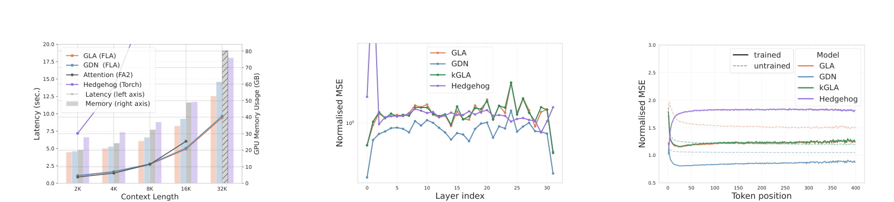
Figure 2 分三块看 pure replacement 的表现。左图显示 linear attention 在长 context 下显存优势明显，能评估到 32K，而 full attention 的 FA2 路径在作者设置下会遇到显存上限；但短 context 下延迟优势并不夸张，因为优化过的二次 attention kernel 在 8K 以下仍很强。中图和右图才是这篇论文更关心的质量近似：GDN 在 layerwise normalized MSE 和 tokenwise normalized MSE 上低于 GLA、kGLA、Hedgehog。右图里早期 token 的误差峰值尤其重要，因为它和理论中的 1/t 常数项、前缀 attention sink 现象相互呼应。kGLA 的虚线初始化看起来比 GLA 好，但训练后优势基本消失，说明仅把 key-dependent 信息压成对角门控不够，rank-1 更新才是 GDN 的关键差异。
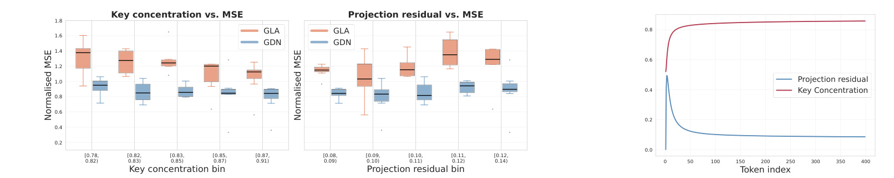
Figure 3 是理论假设的实证检查。左侧两组箱线图把 token 或 layer/head 的诊断量分桶：key concentration 越低、projection residual 越高，normalized MSE 往往越大。右侧 token-index 曲线显示 projection residual 在序列开头最高，而 key concentration 在开头最低，随后逐渐稳定。这个结果支持论文的推理：用平均 key 方向做投影近似不是全局无条件成立，而是在 keys 已经围绕某个方向集中时更合理；前缀阶段缺少稳定均值方向，所以线性化误差最大。也正因为如此，后面把 sink tokens 保留下来并不是经验小技巧，而是在修补理论近似最弱的位置。
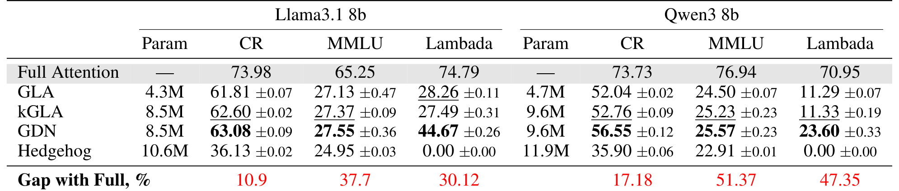
Table 1 把 pure replacement 的下游分数列出来。Llama3.1-8B 上，full attention 的 CR、MMLU、Lambada 分别是 73.98、65.25、74.79；GDN 分别为 63.08、27.55、44.67，明显优于 GLA 的 61.81、27.13、28.26，尤其 Lambada 差距很大。Qwen3-8B 上也类似，GDN 的 CR/MMLU/Lambada 为 56.55、25.57、23.60，仍比 GLA 和 kGLA 更稳。Hedgehog 在两套 backbone 上都非常弱，Lambada 为 0.00。这个表说明两件事：delta-style update 的确在 strict setting 下更强；但 pure linear replacement 仍远不能直接替代 full attention，MMLU 和 Lambada 的 gap 太大，必须引入结构补偿。
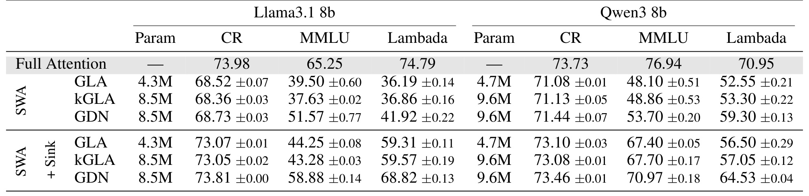
Table 2 对比了 64-token 预算如何分配。只用 SWA 时，Llama3.1-8B 的 GDN 在 CR、MMLU、Lambada 上为 68.73、51.57、41.92；把预算改成 56 个滑窗 token 加 8 个 sink tokens 后，同样 GDN 变成 73.81、58.88、68.82，和 full attention 的 CR 差距只剩 0.17，MMLU 差距 6.37，Lambada 差距 5.97。Qwen3-8B 上也有同样趋势：GDN 的 MMLU 从 53.70 提到 70.97，Lambada 从 59.30 提到 64.53。这里最值得注意的是 sink token 对 Lambada 的提升，因为 Lambada 更依赖上下文延续和前文信息；这说明线性机制最难补的不是所有 token，而是少数高影响前缀与局部窗口的精确交互。
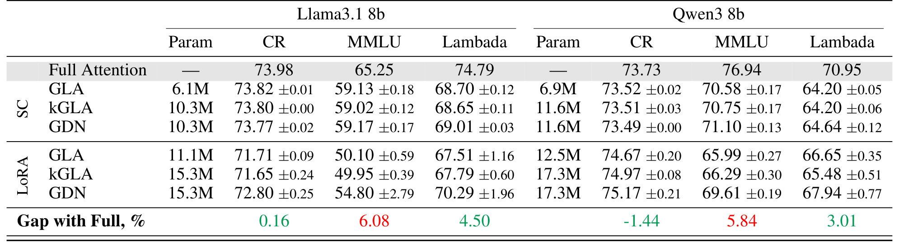
Table 3 展示在已有 SWA/sink 基础上加入 projection adaptation。Llama3.1-8B 中，short convolution 下 GLA、kGLA、GDN 的 CR 几乎都回到 73.8 左右，Lambada 也达到约 68.7 到 69.0；LoRA 下 GDN 的 Lambada 更高到 70.29，但 MMLU 只有 54.80，且方差更大。Qwen3-8B 中 short convolution 的 GDN 为 CR 73.49、MMLU 71.10、Lambada 64.64；LoRA 的 GDN CR 更高到 75.17、Lambada 67.94，但 MMLU 69.61。作者更偏向 short convolution，是因为它在当前固定超参下更稳定，也更像局部 projection 前处理，而不是直接用较大自由度重新拟合任务。表格底部 gap 也提醒：即使上下文型指标接近，MMLU 这种知识型指标仍有约 5 到 6 个点差距，说明线性化不是无损压缩。
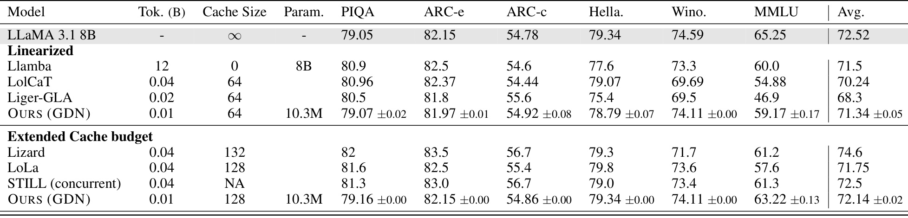
Table 4 是论文的主要横向比较。在 64 cache budget 下，Ours (GDN) 只用 0.01B training tokens 和 10.3M 新参数，PIQA、ARC-e、ARC-c、HellaSwag、WinoGrande、MMLU 的平均分为 71.34，MMLU 为 59.17。相比之下，LoLCaT 用 0.04B tokens、64 cache，平均 70.24，MMLU 54.88；Liger-GLA 用 0.02B tokens、64 cache，平均 68.3，MMLU 46.9。128 cache budget 下，Ours 的 MMLU 提到 63.22，平均 72.14，接近 full attention 的 72.52 平均分。扩展 cache 区域里，Lizard、LoLA、STILL 有不同的 content-aware 或额外 cache 设计，表明 GDN recipe 还可以和更复杂的 token selection 结合，而不是互斥路线。
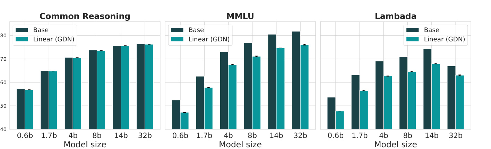
Figure 4 把最终 recipe 放到 Qwen3 0.6B、1.7B、4B、8B、14B、32B 一整条 dense model 线上看。三个小图分别是 Common Reasoning、MMLU 和 Lambada，绿色的 Linear (GDN) 基本跟随 base model 随规模增长的趋势，只是在每个规模上保持一定差距。这个结果比单个 8B checkpoint 更有说服力，因为 post hoc 线性化如果只在一个模型上有效，很可能是偶然适配；能沿规模曲线保持一致，说明 GDN 加 SWA/sink/short convolution 的 recipe 至少没有破坏大模型随参数扩展的基本收益。32B 处只有 instruction-tuned 版本可用，这一点读表时需要保留口径差异。
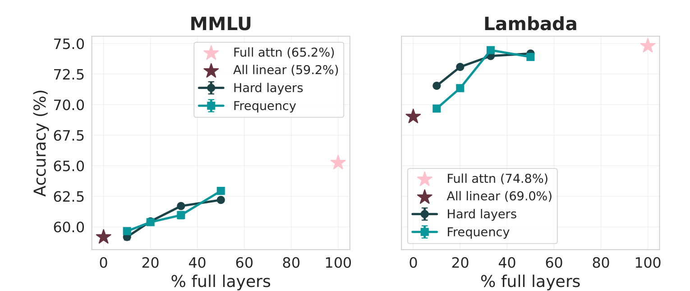
Figure 5 讨论 hybrid model：不是所有层都线性化，而是保留 10% 到 50% 的 full attention layers。作者比较了均匀选择和基于 hardness 信号选择，hardness 来自前面的 key concentration 和 projection residual。图中在只保留 10% 或 20% full layers 时，基于 hard layers 的选择对 Lambada 更有帮助，MMLU 的差异较小。这说明论文提出的诊断量不只用于解释 GDN 为什么好，也能指导混合部署：如果硬件预算允许保留少数二次 attention 层，应优先保留最难线性化的层，而不是机械按深度均匀抽样；这给分层部署、端侧缓存预算和混合 attention 策略留下了清晰接口。
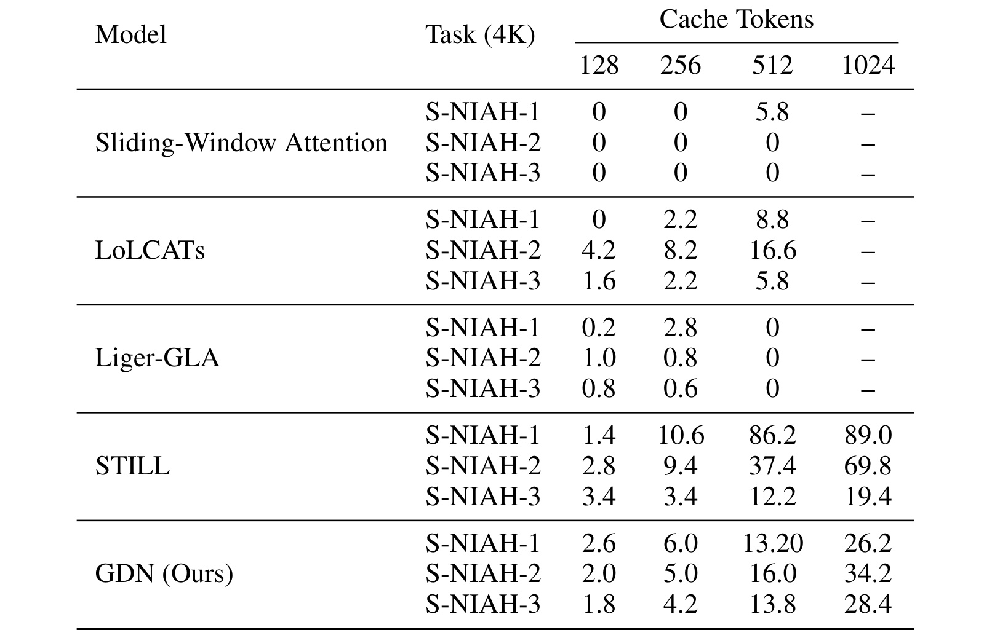
Table 8 看的是 4K context 的 S-NIAH。这里 GDN 并没有在小 cache 下神奇解决所有检索问题：128 tokens 时，S-NIAH-1/2/3 分别只有 2.6、2.0、1.8；256 tokens 也只是 6.0、5.0、4.2；512 tokens 到 13.20、16.0、13.8；1024 tokens 时达到 26.2、34.2、28.4。对比 STILL，512 和 1024 下 STILL 在 S-NIAH-1 和 S-NIAH-2 上更强，说明内容感知 cache selection 对 needle retrieval 仍然很关键。这个表让结论更平衡：GDN linearization 能保持一般推理和部分长上下文能力，但 fixed sliding-window/sink cache 对多 needle retrieval 还不够。
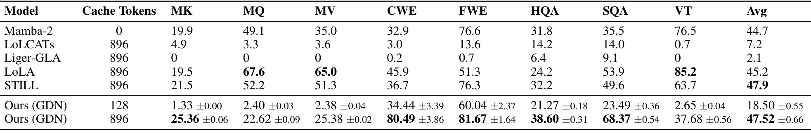
Table 9 更细地拆了 RULER 任务。Ours (GDN) 在 128 cache tokens 下平均只有 18.50，MK、MQ、MV、VT 等检索/变量追踪类任务很弱；当 cache 扩到 896 时，平均升到 47.52，接近 STILL 的 47.9，并超过 LoLA 的 45.2，但任务画像并不均匀：CWE、FWE、HQA、SQA 很强，MK/MQ/MV 和 VT 仍落后于内容选择方法。这个结果和作者限制条件一致：他们没有做 adaptive token selection，只用了固定预算 cache。因此这张表最重要的不是“全面超过所有长上下文方法”，而是指出下一步方向：把 GDN 状态更新与内容感知 token retention 结合，可能比单独扩大固定滑窗更有效。
综合所有实验，论文的证据链比较完整。pure replacement 证明 GDN 在冻结条件下更接近 full attention；SWA/sink 证明理论指出的局部和前缀缺口可以被结构性补偿；short convolution 证明少量投影适配比完全不动 Q/K/V 更实用；最终比较和 Qwen scaling 证明 recipe 不是只在一个小设置里成立。局限也很清楚：MMLU 仍有 gap，长上下文检索需要更好的 cache selection，一阶理论依赖 keys 集中和残差较小等近似条件，不应被读成严格等价证明。
4. 总结
这篇论文的价值不在于又给 linear attention 名单里增加一个模型名，而在于把 post hoc transformer linearization 拆成了可解释的步骤。它先用 frozen-backbone 设定剥离 LoRA、SWA、蒸馏等干扰，再证明 softmax attention 的一阶行为包含 key-dependent rank-1 projection，最后用实验说明 GDN 这类 delta-style update 更符合这种几何结构。对读者来说，最有用的结论是：选择线性 attention 替换块时，不应只问“是否线性复杂度”，还要问 state update 是否能表达和历史 key 方向相关的遗忘与正交投影。
工程上，最终 recipe 也不是“GDN 单独解决一切”。论文实际推荐的是 GDN 加上 disjoint SWA、sink-token budget 和 short convolution 这类轻量适配。SWA 保住局部精确 attention，sink tokens 修补前缀 token 的近似缺口，short convolution 给 Q/K/V 投影一点可训练空间。这个组合在 Llama3.1-8B 上以很小训练 token 和少量新增参数超过 LoLCaT、Liger-GLA 等 baselines，并在 Qwen3 多尺度模型上保持稳定趋势。
需要保留的风险是，长上下文 retrieval 没有被完全解决。Table 8 和 Table 9 显示，固定 cache 预算太小时，needle retrieval 和多项记忆任务仍弱；扩大到 896 cache tokens 后平均分接近强基线，但某些 retrieval 子任务仍落后。也就是说，这项工作更像是给 post hoc linearization 找到了一个更正确的状态更新核心，而不是宣称可以直接替代所有复杂 adaptive caching 框架。后续如果把 GDN 的 rank-1 update 与内容感知 cache routing 结合，才可能在质量、显存、延迟和长上下文检索之间取得更好的平衡。